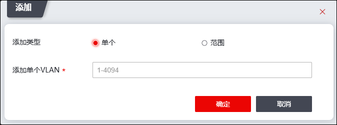
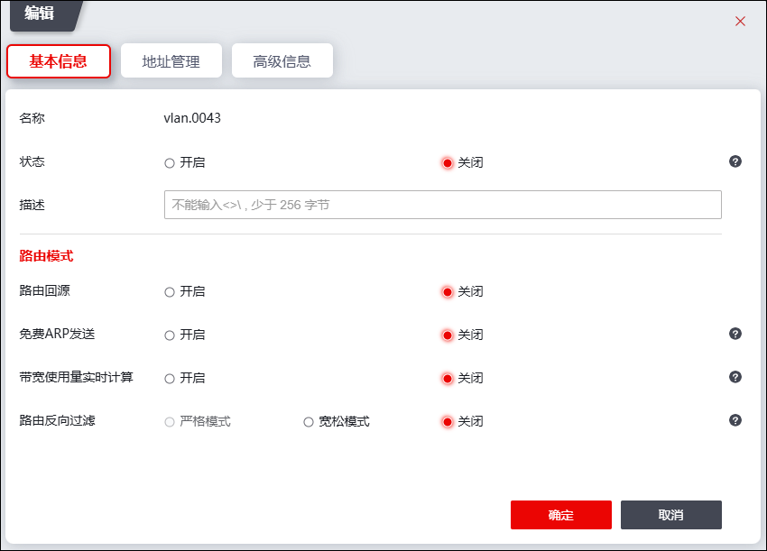

为NGFW的交换接口划分VLAN前，需在本界面定义和配置相应VLAN。配置VLAN的操作步骤如下：
| 步骤1 | 选择 。 |
| 步骤2 | 添加VLAN。 |
1）点击“『添加』”，弹出“添加VLAN”页面。如下图所示。

在添加VLAN时，各项参数的具体说明如下表所示。
参数 |
说明 |
|---|---|
添加类型 |
设置添加VLAN的方式，可选项：单个、范围。 |
添加单个VLAN |
“添加方式”选择“单个”，显示该参数。 添加单个VLAN的ID号，取值范围为1-4094。添加时在页面上直接输入vlan的ID号，如输入10表示添加的vlan为vlan.0010，添加完成后，显示为“vlan.0010”。 |
添加VLAN开始/ 添加VLAN结束 |
“添加方式”选择“范围”，显示该参数。 一次性添加多个名称连续的VLAN。接口取值范围：1-4094。 说明： 1）VLAN开始和VLAN结束参数中设置的数值既可以相同也可以不同，但VLAN开始值一定不能大于结束值。数值不同时，表示添加的是一段ID连续的VLAN；数值相同时，表示添加的是某一个VLAN。 2）添加的范围中对于已经存在的vlan信息，不会重复下发。 3）一次性添加多个名称连续的VLAN时，单次最多添加500个。 |
2）设置完成后，点击【确定】按钮完成VLAN的添加，点击【取消】按钮撤销本次操作。如果添加VLAN成功，则新添加的VLAN会显示在界面中。
| 步骤3 | 设置VLAN虚接口属性。 |
添加VLAN后，需要给VLAN虚接口配置接口IP地址和子网掩码等属性。
勾选已添加的VLAN虚接口，点击『编辑』，弹出“编辑VLAN”窗口。

关于接口属性参数的解释具体请参见 物理接口。参数设置完成后，点击【确定】按钮，完成VLAN属性的设定。